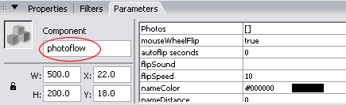

You can insert images into the photoFlow through ActionScript (besides inserting them through the Component Inspector or through XML). This tutorial shows you how to insert additional photos through ActionScript using the addPhoto() method and the photosData property.
1. If you have not already done so you should first complete the Getting Started section and then open the file that you created in Flash.
2. Select the photoFlow component that's on the stage and open the properties panel. Assign an instance name to the component. For the purpose of this tutorial, call it photoflow

3. Deselect the component by clicking on the keyframe in the timeline and press F9 to open the Actions panel.
Enter the code below:
var obj1:Object = {name:"photo6",url:"photo6.jpg"};
var obj2:Object = {name:"photo7",linkageId:"photo_mc",link:"home.html",desc:"this is photo 7"};
photoflow.addPhoto(obj1);
photoflow.addPhoto(obj2);
This script creates 2 new objects in the first and second lines. The objects are added to the photoFlow component on the third and fourth lines.
The following code shows how to assign a list of images using an array:
var photos=[{name:"photo6",url:"photo6.jpg"},
{name:"photo7",url:"photo7.jpg"},
{name:"photo8",url:"photo8.jpg"}];
photoflow.photosData=photos;
This script first creates an array which contains the image info objects. The array is then assigned to the photoFlow component.
Note: When using this method, all old images will be removed automatically before the new images are inserted.
4. Press Ctrl+Enter (win) or Cmnd+Enter (mac) to test your file.